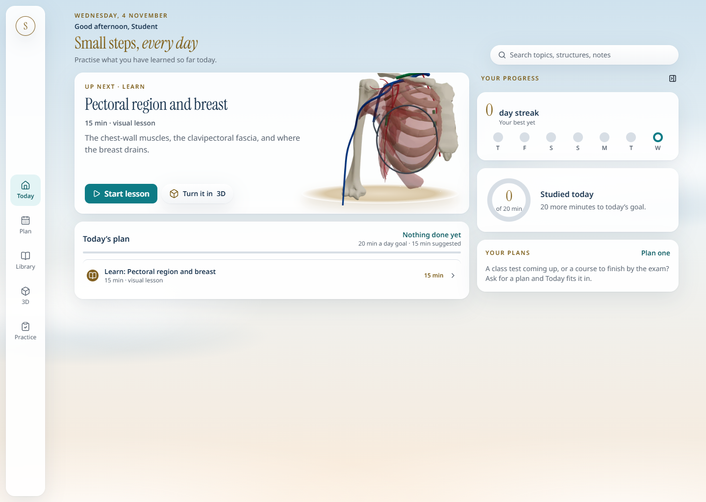
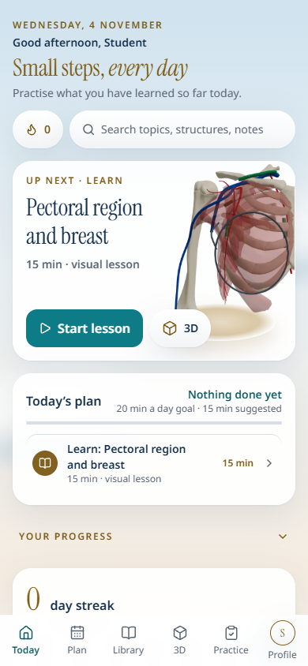
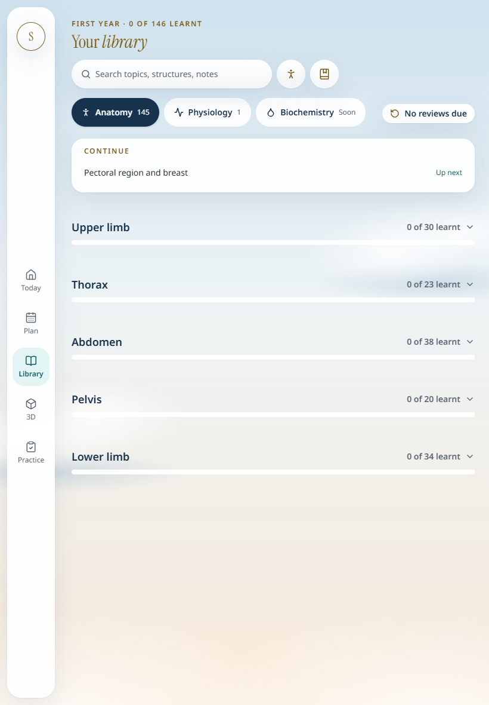
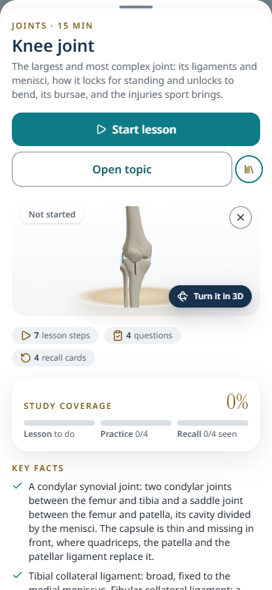
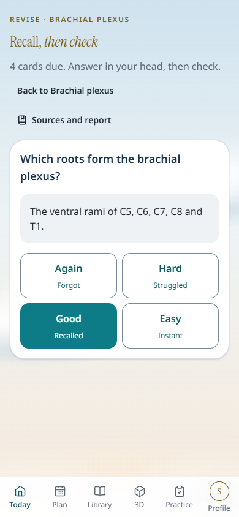
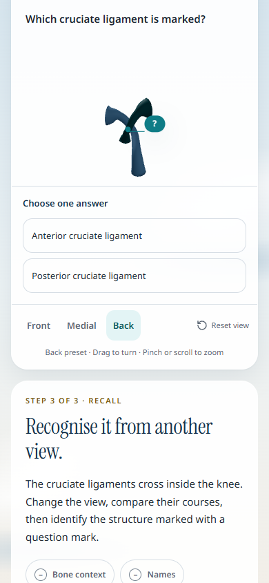

MEDLEARN OS · 4 NOVEMBER 2026
Six actual screenshots from the local production build, using an isolated device-only example profile. The knee sample uses the existing marked model and retains its awaiting-anatomy-review status. These images record the captured build; they are distinct from the earlier design proposals.

1440×1024 · Open full image

390×844 · Open full image

820×1180 · Open full image


